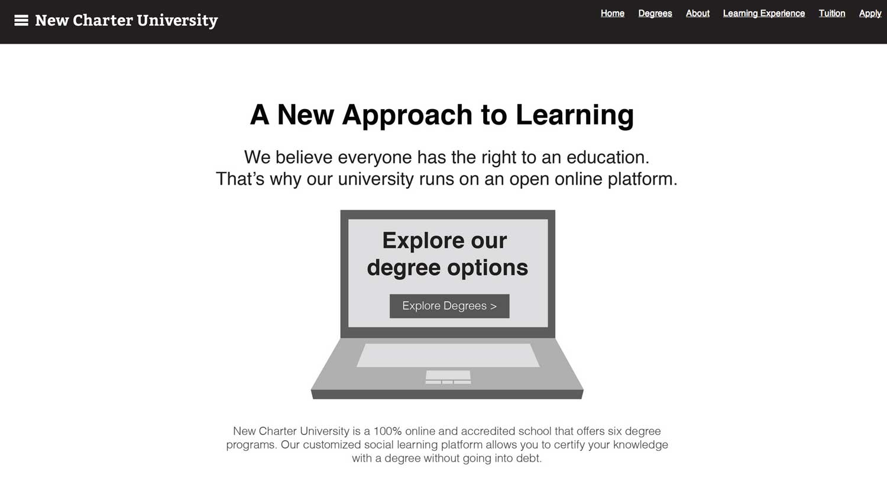

I led the user experience team at UniversityNow during a challenging time in the company’s growth. Our marketing strategy was disconnected from our customers, and it was our UX team who identified this problem and worked to course correct.
The Situation
At UniversityNow, we were changing the game for non-traditional students working to obtain a college degree. Our universities offered affordable, accredited, and self-paced online coursework to help working people get a degree on their terms.
One of the biggest challenges the company faced was understanding how to “speak”, or market to prospective students. Our marketing efforts were completely disconnected from what the user research revealed. We were losing money, not meeting our enrollment numbers, and the company was in need of drastic changes.
The Process
This work was an ongoing effort that evolved over the course of a year. As our Director of User Experience, I wore many hats, and led my team through this process of organizational change. I had the opportunity to work with amazingly talented people, internally and externally. Here’s a deeper look at some of my work:
- Each member of our design team had a different skillset, and I encouraged pairing so we could learn from each other
- I created a robust user research agenda that focused on ethnographic investigations so we could better empathize with our users and fully understand the context that a college degree had in their lives
- Doing research is half the battle, the other half is getting the organization to make decisions based on it. I made results of usability studies accessible for the entire organization. We invited people into our studies to raise awareness, and had ongoing meetings with our executives
- We contracted the higher-ed experts at New City to help us turn our marketing strategy around. I worked closely with them for several months to create a solid foundation and learn about higher ed. marketing from the industry’s best.
- I presented our research findings and plan of action to senior leadership and board member Mitch Kapor
- Our team completely redesigned and rebuilt the websites for both the UniversityNow schools, New Charter and Patten
Here’s more detail about the work we did on our websites:
- We validated everything as cheaply as possible, using in-person, remote and guerilla (!) testing with various methods: paper prototyping, static mocks, and card sorts
- My team and I spent a lot of time focusing on brand messaging with low-fidelity wireframes that I snapped together as click-through prototypes
- I involved the larger organization in branding exercises to come to a consensus about the rebranding of our schools

Wireframe our team built for brand message testing
The Moral
- Marketing and user experience are actually siblings, and they need to work together to a) sell and b) build a usable product
- Turning user research into actionable data requires evangelism and cross-functional teams
- Managing a team is hard but rewarding. Design pairing is the best!
See the Work